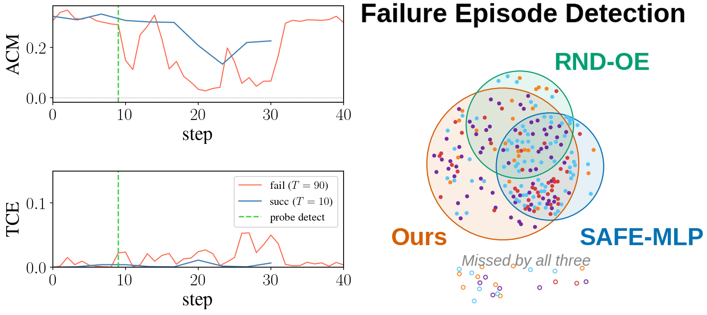
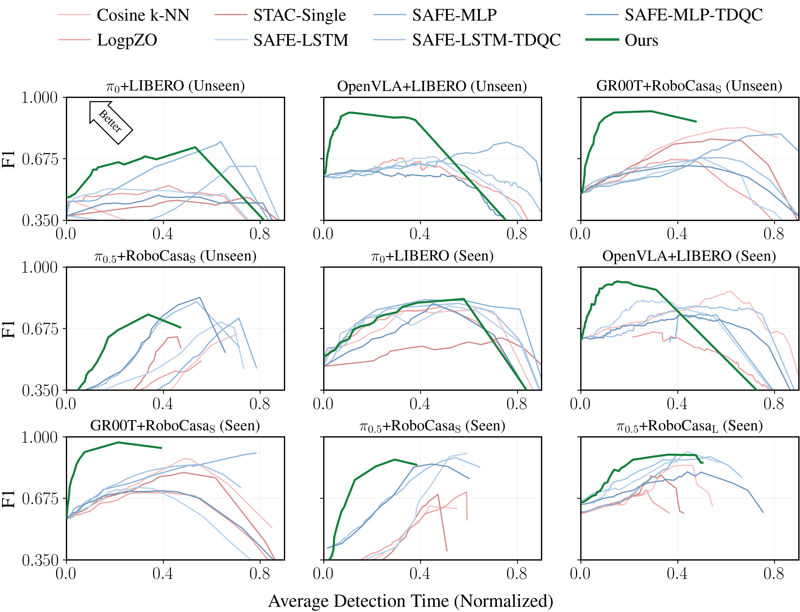
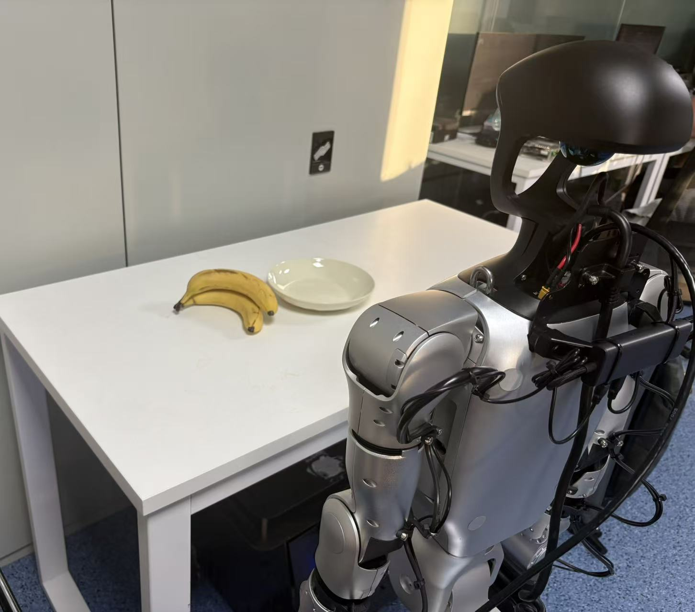
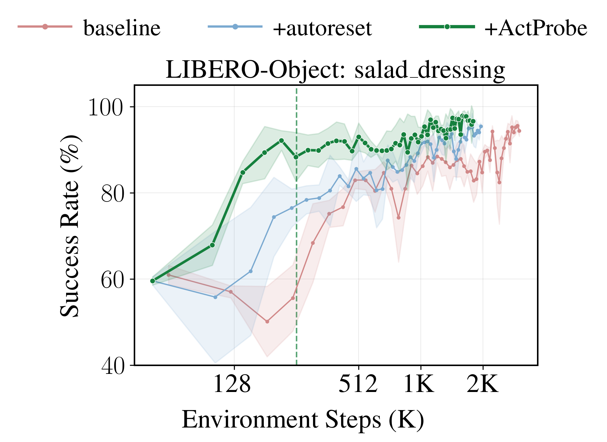

Generative robot policies fail unpredictably at deployment: they hesitate at critical moments, drift off-task, or commit to unrecoverable actions. Existing online failure detectors either require white-box access to policy internals or add runtime overhead through resampling and observation-side signals. Our empirical analysis shows that the emitted action chunks themselves already carry strong predictive signal for impending failures. Motivated by this, we introduce ActProbe, a lightweight, pure action-space detector built on two compact signals available from a single forward pass: Temporal Consistency Error (TCE) between consecutive action chunks and Action Chunk Magnitude (ACM) of the current chunk. A task-conditioned LSTM–MLP maps these signals to per-step failure probabilities. Across a diverse suite of generative robot policies and benchmarks, ActProbe typically raises alerts before failures become visually recognizable, improving the accuracy–timeliness Pareto frontier by a 12.7% average hypervolume gain over both internal- and external-feature baselines, including a +9.0 point early-detection AUC lead on unseen tasks. It further transfers to deployment — predicting failures on unseen real-robot pick tasks and accelerating RL fine-tuning with 2.9× fewer environment interactions.
No resampling, no observation-side fusion, no access to internal policy states.
Compares the overlapping timesteps of two consecutive action chunks with mean squared error. TCE measures whether the policy preserves its short-horizon plan across consecutive inferences.
Treats the current action chunk as a flat vector and takes its L2 norm. ACM captures the command scale at the current step, separating normal smooth progress from oversized corrections that often precede failure.

Dynamic rollouts show the per-step failure probability crossing the calibrated threshold before the visual failure is obvious.

ROC-AUC over the first quarter of the rollout, averaged over three seeds.
| Method | π0 +LIBERO |
OpenVLA +LIBERO |
GR00T +RoboCasa |
π0.5 +RoboCasaS |
π0.5 +RoboCasaL |
||||
|---|---|---|---|---|---|---|---|---|---|
| Seen | Unseen | Seen | Unseen | Seen | Unseen | Seen | Unseen | Seen | |
| Cosine k-NN | 68.9 | 57.2 | 72.1 | 42.0 | 65.5 | 70.3 | 56.3 | 44.4 | 71.1 |
| LogpZO | 73.1 | 58.3 | 57.7 | 52.6 | 68.6 | 65.5 | 70.7 | 67.2 | 73.8 |
| STAC-Single | 65.3 | 65.2 | — | — | 73.6 | 73.8 | 62.3 | 66.0 | 77.7 |
| SAFE-LSTM | 78.2 | 59.2 | 75.7 | 55.9 | 70.9 | 61.3 | 74.9 | 73.1 | 80.9 |
| SAFE-MLP | 77.3 | 58.9 | 80.9 | 67.9 | 74.2 | 61.5 | 73.7 | 71.0 | 74.7 |
| SAFE-LSTM-TDQC | 79.6 | 62.8 | 67.5 | 57.6 | 74.2 | 65.9 | 73.9 | 62.4 | 76.1 |
| SAFE-MLP-TDQC | 76.6 | 60.7 | 65.7 | 52.8 | 71.3 | 64.7 | 74.8 | 70.4 | 73.7 |
| ActProbe | 80.1 | 71.4 | 76.3 | 73.8 | 77.4 | 76.3 | 70.0 | 73.8 | 82.7 |


@misc{actprobe2026,
title = {ActProbe: Action-Space Probe for Early Failure Detection
of Generative Robot Policies},
author = {Huang, Bingjia and Li, Xiangyu and Wang, Xiang and Mi, Liang
and Hao, Zixu and Wang, Weijun and Wu, Hao and Li, Kun
and Liu, Yunxin and Cao, Ting},
year = {2026},
eprint = {2606.08508},
archivePrefix = {arXiv},
primaryClass = {cs.RO}
}